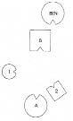
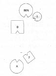
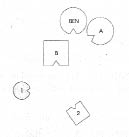
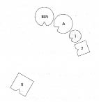
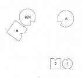

ULLA Adım Ulla. Evliyim. Burada ele almak istediğim konu, gerçekleşmeyen çocuk arzum. Babamın annemle evlenmeden önce nişanlı olduğu kadına geldim. Babam nişanı bozmuş, kadın onu beklemiş ve hiç evlenmemiş. Eski Doğu Almanya’da, halamın oturduğu yerin yakınlarında yaşıyor. Önümüzdeki günlerde oraya, onu ilk kez ziyarete gideceğim.
HELLINGER Demek senin senaryo modelin bu nişanlı.
ULLA Bilmiyorum.
HELLINGER Ben ne dedim?
ULLA Bu nişanlı benim modelim.
HELLINGER Doğru.
ULLA Hayır.
HELLINGER Hayır’ın bu durumu değiştiriyor mu?
ULLA Ama elbette.
HELLINGER Pekâlâ, dizimi yap, o zaman sınayabilirsin.
1. Resim

B Baba
A Anne
1 İlk çocuk, kız (=Ulla)
2 İkinci çocuk, oğul
BEN Babanın eski nişanlısı
HELLINGER Ulla’ya Annen başka nişanlılık ya da evlilik geçirmiş mi?
ULLA Hayır. Benim doğumumdan önce iki düşük yapmış. Bir daha çocuğu olmayacağını düşünmüş. Bir ilaç almış o sıralarda, hâlâ da depresiftir.
HELLINGER Ama seni dünyaya getirmiş.
ULLA Evet, hemen ardından bana hamile kalmış. Bir ilaç daha almış ve erkek kardeşim doğmuş.
HELLINGER Gruba Şimdiki gibi bir dizimde kadınla erkek yüz yüze durduklarında bu evliliğin bittiği anlamına gelir.
Baba nasıl?
BABA Korkunç. Önümde, sağımda, solumda hiçbir ilişkim yok. Arkamda beni delip geçen bakışlar var, o tarafa dönemiyorum, yani korkunç bir durumdayım. Bölünmüş, sevilmeyen, kızağa alınmış gibi.
HELLINGER Haliyle.
Gruba Hiçbir şansı yok artık. Nişanlıya böyle davrandığında hiçbir şansı yok. Şansını kaybetmiş.
HELLINGER Anne nasıl?
ANNE Kendimi dışlanmış hissediyorum, kocam tarafından dışlanmış. Oğlum burada olduğu için mutluyum.
HELLINGER Oğul nasıl?
İKİNCİ ÇOCUK Hiç fena değilim. Şaşıyorum buna ama burada kendimi oğul olarak iyi hissediyorum.
HELLINGER Ulla’nın temsilcisine Kız nasıl?
İLK ÇOCUK Son derece tuhaf. Hiçbiriyle bir ilişkim olsun istemiyorum.
HELLINGER Gruba Bu pekâlâ nişanlının duygusu olabilirdi.
HELLINGER Eski nişanlı nasıl?
BABANIN ESKİ NİŞANLISI Sen beni buraya yerleştirdiğinde kazandım diye düşündüm.
Hellinger kızı eski nişanlının yanına yerleştirir.
2. Resim

HELLINGER Ulla’nın temsilcisine Böyle nasıl?
İLK ÇOCUK Nişanlıya soru yöneltildiğinde bu gerçekten ilgimi çeken ilk şey oldu. Sonra o yana baktım ama duygu gayet nahoştu.
HELLINGER Biraz daha yaklaş.
İLK ÇOCUK Bir deneyeyim. Çok tuhaf. Sanki bana dayanıyormuş da onu tutmak zorundaymışım gibi. Kafa karıştırıcı. Olmuyor.
HELLINGER Anne şimdi nasıl?
ANNE Daha iyi. Saldırganlık artık yok.
HELLINGER Gerçekte nişanlının yanında durması gereken kim?
ANNE Bilmiyorum.
HELLINGER Senin orada olman gerekiyor. Git bir bakalım.
Anne eski nişanlının yanına geçer, kız yerine döner.
3. Resim

ANNE Şimdi iyi böyle.
HELLINGER Doğru. Depresyonun nedeni bu.
Gruba Anne ancak nişanlıyla dayanışma içinde olduğunda kendini yeniden iyi hisseder. Oraya gitmeli.
HELLINGER Eski nişanlı şimdi nasıl?
BABANIN ESKİ NİŞANLISI İyi.
Hellinger resmi değiştirir.
4. Resim

HELLINGER Baba nasıl?
BABA Dışlanmış ama gelecek açık.
HELLINGER Daha mı iyisin daha mı kötü?
BABA Çelişik duygularla dolu.
HELLINGER Eski nişanlı için böylesi nasıl?
BABANIN ESKİ NİŞANLISI Sol tarafımdan yana kendimi iyi hissediyorum. Ama eski nişanlım yönüne doğru hâlâ bir üzüntü hissediyorum.
HELLINGER Artık onunla birlikte olamazsın.
BABANIN ESKİ NİŞANLISI Ben de ondan çok daha fazla sol yanımdakilere bakıyorum.
HELLINGER Bir de şunu deneyebiliriz…
Hellinger baba ve eski nişanlısını bir çift olarak ailenin karşısına yerleştirir.
5. Resim

HELLINGER Baba için böyle nasıl?
BABA İlk defa tahammül edilebilir bir halde.
HELLINGER Anne için nasıl böylesi?
ANNE Çok daha iyi.
HELLINGER Nişanlı için nasıl?
BABANIN ESKİ NİŞANLISI İyi.
İLK ÇOCUK Bu benim için şimdiye kadarki en iyi dizim. Ama benim için artık gitme ve kendi ayaklarım üzerinde durma zamanı.
HELLINGER Ulla’ya Kendi yerine geç.
ULLA Dizimde kendi yerini aldığında İyi böyle.